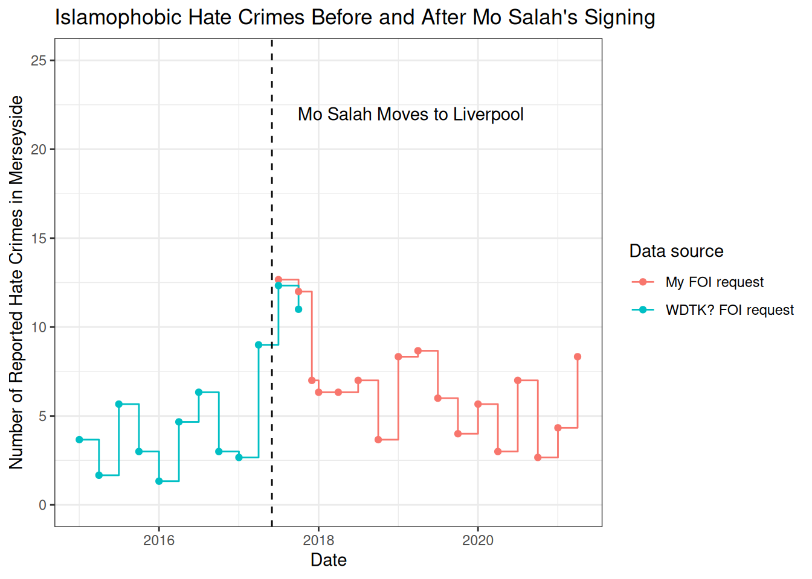
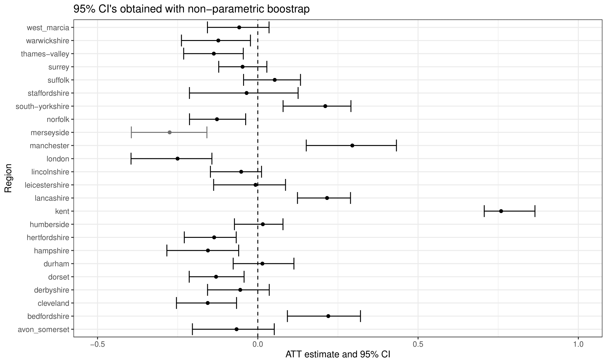

I Don't Believe Mo Salah Reduced Hate Crimes
Published in the APSR in 2021, “Can Exposure to Celebrities Reduce Prejudice? The Effect of Mohamed Salah on Islamophobic Behaviors and Attitudes” linked the move of Mo Salah —a famous Muslim football player— to play for Liverpool F.C. with a reduction in the rate of hate crimes in the area and decrease in the number Islamophobic of tweets among Liverpool fans. The article was widely shared, and received major international coverage by The Economist, The Independent, Vice, and Al Jazeera, among other outlets, it was discussed on the venerable Freakonomics, and was also highlighted as the cover article for the APSR issue which it was published. The underlying theory is that exposure to Mo Salah (a prominent Muslim role model) caused Liverpool Fans and people Liverpool area to more tolerant towards Muslims in the area and online.
In what follows, I will discuss my thoughts on the paper. I think that the synthetic control analyses presented in the study do not suggest that Mo Salah reduced hate crimes or Islamophobic tweets among Liverpool fans. I have four main points of contention:
- Islamophobic hate crimes make up only 4% of U.K. hate crimes; a 16% reduction in hate crimes move is an implausibly large effect. I also do not believe that Salah could have halved the number of Islamophobic tweets written by Liverpool fans.
- Data from a freedom of information request I filed suggests that Islamophobic hate crimes remained relatively constant around the date of Mo Salah’s move.
- One of the inference strategies the authors use — the non-parametric bootstrap — is inappropriate when there is just one treated unit. If an alternative method to construct the standard errors is used, the effect is no longer significant.
- I think that the results from the permutation inference performed by the authors are overstated: they actually suggest that the change in hate crimes and Islamophobic tweets in Merseyside —the county Liverpool sits in— was not anomalous relative to other counties.
The Effect Is Implausibly Large
I don’t believe that a celebrity can decrease the rate of hate crimes in an area by anything close to 16%. This is especially true for celebrity hypothesized to decrease the amount of Islamophobic hate crimes, which make up just 4% of U.K. hate crimes. Clearly, it should not be possible for a mechanism that reduces anti-Muslim hate crimes to reduce overall hate crimes by 16%, as eliminating all anti-Muslim hate crimes would only reduce hate crimes by 4%.
I think that this issue might have initially flown under the radar, as the paper originally stated that Anti-Muslim hate crimes make up 39% of U.K. hate crimes. I wrote to the authors who quickly issued a correction which explains the source of the issue. Yet I am not sure that the ramifications of this correction have been completely appreciated! A 16% decrease cannot possibly be attributed to a reduction in Islamophobic hate crimes. This fact alone should show that the result is either spurious (driven by chance or some confounding factor), or that Mo Salah reduces hate crimes that were not reported as Islamophobic.
Islamophobic Hate Crimes Did not Decrease In Merseyside Around Salah’s Signing
This dovetails nicely into my second point: I managed to obtain data on the rate of Islamophobic hate crimes over time in Merseyside, which does not change around Salah’s signing.
To obtain this data, I sent a freedom of information request with the Merseyside Police Department, supplied me with data on Islamophobic hate crimes from mid-2017 onwards. They couldn’t supply me with earlier data as it was not kept after an update to the recording scheme, but I was able to find this data in a previous freedom of information request on the public records site What to They Know?

There are a lot of difficulties with this analysis: the two datasets don’t line up perfectly, and I can’t rule out the possibility that the rate of Islamophobic hate crime would have spiked if Mo Salah had not signed. However, it is clear that Islamophobic hate crime did not disappear after the signing of Salah. I think the most reasonable conclusion to reach is that Salah simply had no effect on the number of hate crimes in the area.
The Non-Parametric Bootstrap has Poor Coverage in This Setting
If Mo Salah did not have an effect on the number of Islamophobic Hate Crimes, then what explains the significant effect found by the authors? I argue that the p-values calculated by the authors drastically understate the likelihood that these results are due to random chance, and the estimates they obtain are actually perfectly consistent with the random fluctuations one would expect under no effect.
As part of their inference strategy, the authors use the non-parametric
bootstrap methods packaged with the gsynth package to calculate p-values
associated with the estimated effect of Salah’s move on the number of hate
crimes in the area and Islamophobic tweets. Both the package
documentation and
the article introducing the package stress that this method is inappropriate
when the number of treated units is under 40 (Xu 2017 p 8). When there is just
one treated unit (as there is here) the non-parametric bootstrap has drastic
under-coverage, and identifies statistically significant changes when applied
to 70% control counties, as can be seen below:

To get an intuitive sense of what the problem here is, ignore the panel structure of the data, and pretend that you want to derive the variance for a difference of two group means, \(\hat{Y_1}\), and \(\hat{Y_0}\). As a reminder, the variance a difference between two groups is the sum of the variance of the two within-group estimators:
\[Var(\hat{Y_1} - \hat{Y_0}) = Var(\hat{Y_1}) + Var(\hat{Y_0})\]
Now consider what happens when we try and approximate this calculation with the bootstrap. Each bootstrap sample must contain the only treated unit, and because of this, the bootstrapped variance of the treatment group is zero. The confidence intervals and p-values then fail to reflect uncertainty about the mean of the treatment group, and under-cover. An analogous principle underlies the poor coverage we see here - the small number of treated units means that the bootstrap distribution cannot approximate the sampling distribution of the estimator, and we see drastic under-coverage.
The significant result from the non-parametric bootstrap cannot be taken to show that the effect cannot be due to chance, as the procedure will identify spurious effects in 70% of cases when there is actually no effect.
Other Methods of Inference Used in The Paper
So far, I have discussed the sampling-based inference presented in the paper to suggest that the observed decrease in hate crimes and tweets cannot be explained by chance. A reader might still be convinced by one of the other complimentary forms of inference presented by the authors based on placebo tests, which compare the observed treatment effect to a distribution of placebo effects obtained by pretending every control unit was treated. In this section, I would like to highlight reasons to think that the placebo tests presented also overstate the evidence that suggests Salah had an effect.
I hope I am not splitting hairs here, but it appears the two-sided p-value (.08) obtained from permutation inference using the hate crime data is only significant (because of the specific seed chosen to start the synthetic control algorithm. If another seed is chosen, the result is usually 3/24, or 0.125. Sometimes, it is even as low as 4/24. At any rate, I think the exact number is unimportant; one can look at distribution of point estimates in the figure above and see that the observed change is not extreme relative to the distribution of placebo effects.
I also think the framing of the permutation-inference results presented by the authors overstate how anomalous the treatment effect estimate is relative to the estimates in the control counties:
We employ the same permutation inference approach as in the hate crime analysis. Only for Liverpool F.C. followers do we estimate a consistently negative treatment effect in the posttreatment period. The placebo estimates tend to oscillate between positive and negative treatment effects, while the Liverpool treatment effect estimates are negative in every posttreatment month but one—again suggesting that the observed estimate for Liverpool F.C. followers is unlikely to have occurred by chance. (Alrababa’h et al. 2021 p 9)
It is true that Liverpool F.C. saw the largest decrease in Anti-Muslim hate crimes of the five clubs analyzed. What is left unsaid is that another football club, Chelsea F.C., saw a 30% larger estimated positive effect, which suggests that the effect among Liverpool fans was not unusual relative from the change observed among other club fanbases. The comment that Liverpool’s effect estimate is the only one that is significantly negative also strikes me as hypothesizing after the results are known - if Liverpool’s effect were only negative after a burn-in period, or negative only during the football season, I believe that this could have been taken as evidence too.
Final Thoughts
There’s more to the article than the points that I have raised, and I encourage everyone to read it. I was also only able to write this piece because of the superlative care the authors took in preparing their replication materials, which allowed me to more fully engage with and understand the paper. My personal view is that I am convinced from the survey experiment the authors performed that Mo Salah’s presence on the field (when appropriately framed) makes people less likely to endorse Islamophobic beliefs, but I do not believe this extends to real-life behavior.